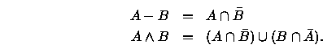

Copyright © 1994, 1996, 1999 Information Geometers Ltd and The University of Bath
What is a geometric modeller? Let's start with solid modelling. A solid modeller is a computer program for representing solid objects. Armed with such a program, you can make pictures of the objects, work out their volume, try to decide automatically how to assemble them, or do a number of other useful things.
Geometric modellers like svLis are solid modellers and more. We'll come
to the `more' in Chapter 3 .
For now let's use svLis and C++ to make a model of
a solid cube with one corner
at the origin and another at the point (1,1,1).
.
For now let's use svLis and C++ to make a model of
a solid cube with one corner
at the origin and another at the point (1,1,1).
#include <svlis.h>
int main()
{
// Start Svlis.
svlis_init();
// Define the corners.
sv_point corner_a = sv_point(0,0,0);
sv_point corner_b = sv_point(1,1,1);
// Make the cube; it will be a set
// (of which more in a moment).
sv_set lump = cuboid(corner_a, corner_b);
// Write it to a file.
ofstream f("my_little_cube.set");
f << lump;
f.close();
// Tidy up Svlis
return(svlis_end(0)); }Once you have included the svlis.h header file, you can just code up what you want using perfectly straightforward C++ . As you can imagine, sv_point
Writing the cube to a file is, perhaps, the dullest thing we could have done with it. And as gripping entertainment, the cube itself lacks something. We could make it a bit more interesting by cutting a cylindrical hole through it along a diagonal:
// ... // Define an axis; // let's use the cube's leading diagonal. sv_line axis = sv_line(corner_b, corner_a); // Make a cylinder along the axis // with a radius of, say, 0.2. sv_set cyl = cylinder(axis, 0.2); // Subtract the cylinder from the cube. lump = lump - cyl; // ....Again, sv_line is a svLis struct (see Page
We can get svLis to draw a picture of the semi-infinite set of points in space that we've created: that is, a picture of the cube punctured by a diagonal hole. There are a number of different techniques you could use to get svLis to draw pictures. One of the fastest is to create a collection of polygons that very nearly approximate the surface of the set. Making the polygons is called faceting , and a faceting ability is built into svLis. The resulting polygons can readily be viewed using standard computer graphics display techniques. The ability to display polygons is available in the hardware of many modern workstations.
In order to facet a set, in this case the cube with a hole, svLis needs to know where in space to start work. We define this region of interest as a box, aligned with the coordinate axes. The set and the box together make a model. The present region of interest might extend from the point (-1, -1, -1) to the point (2, 2, 2). (We define a box in the same way as a cube, by specifying two corners on its leading diagonal.) The faceting code is:
// ... corner_a = sv_point(-1, -1, -1); corner_b = sv_point(2, 2, 2); sv_box interesting = sv_box(corner_a, corner_b); // Make the model by combining the shape // and the region of interest. sv_model m = sv_model(lump, interesting); // Facet the model m - this makes the polygons - then // plot the picture of the polygons. m = m.facet(); plot_m_p_gons(m); // ....The sort of picture you get as a result of calling plot_m_p_gons depends on the type of computer on which you're running svLis. On my Silicon Graphics it made the picture shown in Figure 1.
At this point the perceptive and attentive reader (hello!) may be wondering
how the box and the cuboid functions differ. This is explained on Page  .
For now, let's worry about why our solid lump was held in a svLis class
called sv_set.
.
For now, let's worry about why our solid lump was held in a svLis class
called sv_set.
The usual two-dimensional Venn diagram for all
these is shown in Figure 2.
We've already seen the difference operator in action. I used it to make
the cylindrical hole in the cube with the program line:
lump = lump - cyl;
Instead, I could have intersected the shapes, defining the region
in space where both were solid, or unioned them, defining the region where
either or both were solid. The results are shown in Figure 3.
If you are still as perceptive and attentive as
you were a few paragraphs ago, you've probably spotted the relationship
between the operators of set-theory and those of Boolean logic
. Intersection gives you the part of space where the two things being intersected
are both solid, just as the AND
of two bits of data only gives you a 1 when both bits are 1.
Similarly, union gives you solid where either or both of the two
things being unioned are solid, just as the OR
operator gives you a 1 when either or both of the two bits being
ORed
are 1. If you look back at the Venn diagram in Figure 2
you will also be able to see the relationship between the symmetric difference
operator and the exclusive- OR
operator. It is because of all this that you will sometimes see set-theoretic
geometric modellers called Boolean modellers
in the literature .
.
Internally, svLis recodes -and whenever you use them, by means of the following rewriting rules:

(The bar means set-complement; draw a Venn diagram of your own if you
need to be convinced that these work.) As a result, internally svLis only
has the operators
and
to deal with, which makes all sorts of things simpler, easier, and more
efficient (though it does use up more memory--see Page  ).
).
You will have noticed that I didn't include a picture of the symmetric difference of the cube and the cylinder in Figure 3. The reason is that, seen from the outside, the symmetric difference of two solids looks just like their union. However, the symmetric difference has a void in the middle that the union doesn't have (look at Figure 2 again if you need to be convinced). How could we examine the void which the symmetric difference creates?
Take a piece of svLis set-theory, such as
The cylinder that we first encountered on Page  was a primitive. Indeed, instead of
typing sv_set cyl = cylinder(axis, 0.2);
was a primitive. Indeed, instead of
typing sv_set cyl = cylinder(axis, 0.2); I could have (rather laboriously) constructed it by typing
I could have (rather laboriously) constructed it by typing
sv_primitive cyl_prim = p_cylinder(axis, 0.2); sv_set cyl = sv_set(cyl_prim);The prefix p_ is there to distinguish the function that returns a cylinder primitive from the one that returns a cylinder set as C++ won't allow you to overload functions by their return value alone. Indeed, the cylinder set function does little more than those last two lines of code. Thus we have a hierarchy, with primitives at the bottom, sets (which may be just one primitive, or a combination of many) above them, and models (which are boxes containing one or more sets) above them. This is illustrated in Figure 5. (We'll see how to put more than one set into a model in Chapter 4.)
There are other primitives in svLis: for example the sphere, sv_primitive
p_sphere(sv_point centre, sv_real radius).However,
the cube through which I drilled a hole was not a primitive. SvLis
made it by intersecting together six planar half-spaces.
A planar half-space is the simplest primitive in svLis. It is a flat plane
in space that has solid on one side and nothing on the other. The solid
and the nothing both extend to infinity away from the plane .
Indeed, so simple and fundamental are planar half-spaces that svLis has
a special
struct called sv_plane
for holding them:
.
Indeed, so simple and fundamental are planar half-spaces that svLis has
a special
struct called sv_plane
for holding them:
sv_point n_vector = sv_point(-1, 1, 0); sv_point through = sv_point(0, 0, 0); sv_plane f = sv_plane(n_vector, through);To define a plane, you need to supply its normal vector (called n_vector in the example) and any point in space through which the plane passes (called through in the example). The normal vector is a vector at right angles to the plane; by convention it points from solid to air. In the example just given the plane is vertical (by which I mean that it's parallel to the z-axis
sv_primitive p_f = sv_primitive(f); sv_set s_p_f = sv_set(p_f);
A half-space is called a half-space because it divides all of spaceinto two regions: a semi-infinite solid part, and a semi-infinite air part. Anything that partitions space in this way is called a half-space. The cylinder is a half-space, for example: it defines two infinite parts--a long thin solid one, and an air one that is everywhere else. Indeed, all svLis primitives are half-spaces (as are most svLis sets; we'll come to two that aren't in a minute).
Now we've been on that diversion, let's return to looking at the void in the symmetric difference of the cube and the cylinder. How can we make the cut that exposes the half-grub in the apple?
Suppose I were to intersect the result of the symmetric difference operation with the half-plane that I just created:
lump = lump ^ cyl; lump = lump & s_p_f; m = sv_model(lump, interesting); m = m.facet(); plot_m_p_gons(m);That was rather longwinded, and I could obviously have compressed it into two or three lines. But I have left it like that because it's easier to read and to understand. The picture that the call to plot_m_p_gons produces is shown in Figure 6.
The effect is to remove the parts of the cube and cylinder that lie
in the region on the air side of the half-plane, thus creating a section.
SvLis has a number of structs and classes, of course. Generally, simple ones like sv_points have public data which you can get at directly if you want. The more complicated ones, such as sv_sets, for example, hide their data, and provide you with functions so you can get at values without making a mess.
SvLis aims to be completely consistent in its use of object-orientation; when some action, say, rotates an sv_plane then the same action will also rotate a whole sv_set, and so on. Also, any operation that makes sense is defined, so, for example, if you add an sv_point to just about anything, that thing is translated to a new place in space. For consistency, one or two operations that don't make a lot of sense are defined as well: such as taking e to the power of an sv_box. Doubtless someone will find a use for these. . . .
SvLis is what is called a kernel modeller :
that is to say that you're not forced to use a fancy windows-driven interface--you
can incorporate svLis into your own code; nor does svLis come bundled with
manufacturing applications etc. What it does provide is a consistent,
efficient, and user-expandable representation for a wide variety of shapes,
and the low-level functions for manipulating and interrogating those shapes.
The idea is that you, the user, can employ it as the core of your geometric
modelling application and write front ends and high-level functions based
on (sometimes very many) calls to the low-level ones. Your application
may be a product or it may be software that provides functionality to other
application-builders in turn.
:
that is to say that you're not forced to use a fancy windows-driven interface--you
can incorporate svLis into your own code; nor does svLis come bundled with
manufacturing applications etc. What it does provide is a consistent,
efficient, and user-expandable representation for a wide variety of shapes,
and the low-level functions for manipulating and interrogating those shapes.
The idea is that you, the user, can employ it as the core of your geometric
modelling application and write front ends and high-level functions based
on (sometimes very many) calls to the low-level ones. Your application
may be a product or it may be software that provides functionality to other
application-builders in turn.
The svLis procedures and functions are available as a library. Applications make calls to this library, and for this reason the procedures and functions are named the Applications Programming Interface, or API for short.
What do I mean by the phrase `wide range of shapes'? So far, all we have seen are flat surfaces and cylinders. SvLis can, in fact, represent any solid that can be expressed as an implicit polynomial inequality up to a polynomial degree of about eight. (The `about' here is because some polynomials are more numerically stable than others.) This is explained in more detail in Chapter 3. All I shall say here that this includes all the usual engineering shapes (planes, cones, cylinders, spheres, tori and cyclides) as well as more complicated surfaces. SvLis allows you to blend these shapes to make fillets and smooth transitions from one to another. SvLis also allows you to use the sine, cosine, and exponential functions when building descriptions of shapes.
Shapes in svLis don't have to be solids occupying real volume. You can make curved or flat sheets of zero thickness, and curved or straight lines, and points. All of these, together with the solids, can be combined using the set-theory that we have already seen to make membranes with holes in, curved lines with breaks, grids of points and so on, in a completely consistent way.
SvLis also allows you to define your own shapes by writing C++ functions. This means that, even if you can't work out (or there isn't) the algebra to define a shape, as long as you can write some code that can tell for any point whether it's inside or outside your shape, and you can have a hack at generating a gradient vector for it, then svLis can incorporate it into models, create blends onto it, and indeed do just about anything with it that can be done with the internal polynomial shapes.
SvLis is intended primarily for use in traditional CADCAM areas like engineering and architecture. But its inherent versatility and its ability to allow user-programmed shapes should also allow it to be used in diverse fields such as medicine, data visualization, and archaeology.
Adrian Bowyer